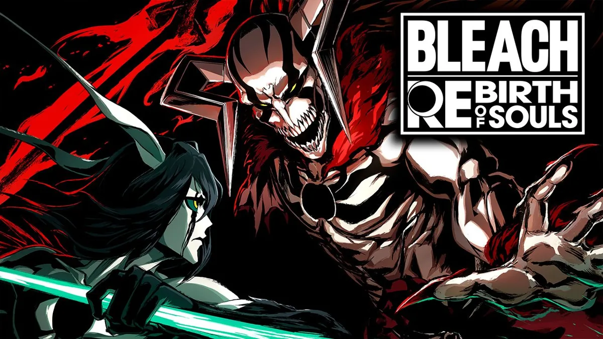

Bleach: Rebirth Souls
Bleach: Rebirth Souls est un jeu mobile inspiré de l'univers du manga Bleach. Il propose des combats dynamiques en temps réel, où les joueurs peuvent collectionner et améliorer leurs personnages favoris de la série. Le jeu se distingue par ses graphismes fidèles à l'anime et ses nombreux modes de jeu, permettant de revivre les moments emblématiques de l'histoire.
Bleach: Brave Souls
Bleach: Brave Souls est un action-RPG disponible sur mobile et PC. Il permet aux joueurs d'incarner Ichigo, Rukia et bien d'autres personnages pour affronter des ennemis dans des niveaux inspirés du manga. Le jeu est apprécié pour son gameplay nerveux, ses événements réguliers et la possibilité de jouer en coopération avec d'autres fans du monde entier.